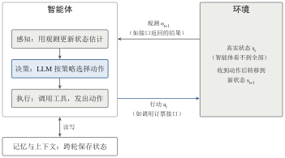
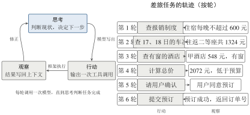
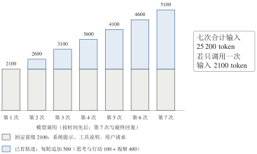

6.3 智能体如何运行
组件有了，它们怎样配合起来完成一个任务？本节先把智能体的运行抽象成“感知—决策—行动”闭环，说明闭环为什么能纠错；再看决策这一步具体怎么做——ReAct 让模型交替写出“思考”和“行动”，用工具返回的“观察”修正下一步思考，并用差旅任务走一遍完整轨迹；然后说明 LLM 与 Agent 框架如何分工；最后讨论什么时候该停、怎样校验、人在哪里介入。结论是：闭环带来了纠错能力，也带来了调用次数、token 消耗和错误累积的代价，这些代价都可以估算。
6.3.1 感知—决策—行动闭环
智能体的运行是一个循环（图 6-4）：在第 \(t\) 轮，智能体获得观测 \(o_t\)，据此更新它对环境状态的估计；按策略选择动作 \(a_t\)；动作作用于环境，环境转移到新状态，并给出下一轮的观测。写成公式为 \[\begin{gathered} \hat{s}_t = \mathrm{Update}(\hat{s}_{t-1},\, o_t),\qquad a_t \sim \pi(\,\cdot\mid \hat{s}_t),\\ s_{t+1} \sim \mathcal{T}(\,\cdot\mid s_t, a_t),\qquad o_{t+1} \sim \mathcal{O}(\,\cdot\mid s_{t+1}), \end{gathered} \tag{6-1}\] 其中 \(s_t\) 是环境的真实状态，智能体往往看不到它，只能维护一个估计 \(\hat{s}_t\)（加帽表示估计值）；\(\pi\) 是策略，即“在什么状态下采取什么动作”的规则；\(\mathcal{T}\) 是环境的状态转移概率；\(\mathcal{O}\) 是观测概率，描述在某个状态下会看到什么。式 （6-1） 正是部分可观测马尔可夫决策过程（POMDP）的结构[1]。在 LLM 智能体中，\(\hat{s}_t\) 就是上下文和记忆里记下的任务进度，\(\pi\) 由“LLM + 提示词”实现，\(\mathrm{Update}\) 由框架把新观测写入上下文来完成。

图 6-4 智能体与环境的“感知—决策—行动”闭环。环境把观测送给智能体，智能体决策后把动作作用于环境，环境状态改变后产生新的观测；记忆跨轮次保存状态估计，使闭环具有连续性
对 LLM 驱动的智能体，闭环的三步各有具体形态：
感知/输入：用户的文字或语音，以及其他系统 API 返回的结构化或非结构化数据；
决策/推理：把目标分解为可执行的子任务，并选出下一步。模型常借助思维链（Chain of Thought，CoT）或思维树（Tree of Thoughts，ToT）完成多步推理（第 6.4.3 小节）；
行动：生成文本回复、调用 API、更新数据库、给出建议或对数据分类；对机器人而言则是在物理空间中移动。
行动之后，智能体继续感知环境变化，并据此调整后续决策，形成反馈循环。
闭环的价值在于纠错。一次 LLM 调用是开环的：输出不会回到输入端，它无从知道自己错在哪里。闭环系统在每一轮都能用真实观测检验上一步的预期：预期“这个接口返回车次列表”，实际却返回“无权限”，智能体就能发现前提不成立并调整。
6.3.2 ReAct：把推理与行动交织起来
闭环说明了“循环”，但没有说明“决策”这一步怎么做。2022 年提出的 ReAct（Reasoning and Acting）[2]给出了影响很大的做法：让模型在每一步先写出一段“思考”，再给出一个“行动”；框架执行行动，把结果作为“观察”追加到上下文里，模型据此写下一段思考。三种成分交替出现：
思考（Thought）：模型对当前情况的判断和下一步打算，只写进上下文，不作用于环境；
行动（Action）：一次工具调用，写成“工具名（参数）”的形式，由框架解析并执行；
观察（Observation）：工具返回的结果，由框架写回上下文。
下面是差旅智能体处理“下周三去上海开一天会，预算三千”的一条完整轨迹。设今天是周四（11 月 12 日），用户常驻北京，会议在浦东，上午 9 点开始，下午 5 点结束；可用工具有 get_policy（查报销制度）、search_trains、search_flights、search_hotels、calc（计算）、ask_user（请用户确认）和 book（提交预订）。
ll
思考 1 & 会议 9 点开始，当天早上出发赶不上，需要前一晚到达并住一晚。先查报销上限，避免方案不能报销。
行动 1 & get_policy(city="上海", level="员工")
观察 1 & 住宿每晚上限 600 元；交通限高铁二等座或经济舱。
思考 2 & 京沪高铁约 4.5 小时，门到门时间与飞机相近且更准点，先查高铁：17 日晚去，18 日会后返。会场到虹桥站约 1 小时，返程应在 18:30 以后。
行动 2 & search_trains(from="北京", to="上海", go="11-17 17:00后", back="11-18 18:30后")
观察 2 & 去程：车次 A，17 日 19:00 开、23:28 到上海虹桥，二等座 662 元。返程：车次 B，18 日 19:30 开，二等座 662 元。
思考 3 & 往返高铁共 1324 元。还需会场附近、每晚不超过 600 元的酒店。用户记忆里有“不住无窗房”。
行动 3 & search_hotels(near="浦东会场", date="11-17", max_price=600, window=true)
观察 3 & 甲酒店 548 元/晚，有窗，距会场 1.2 公里；乙酒店 420 元/晚，无窗。
思考 4 & 乙酒店无窗，排除。核算总价：车票 1324 元 + 住宿 548 元 + 市内交通预估 200 元。
行动 4 & calc("1324 + 548 + 200")
观察 4 & 2072
思考 5 & 总价 2072 元，低于 3000 元预算；住宿 548 元/晚、高铁二等座都符合报销制度。订票会产生费用，属于不可撤销的操作，先请用户确认。
行动 5 & ask_user("方案：17 日乘车次 A 去、18 日乘车次 B 回，住甲酒店一晚，合计约 2072 元。是否预订？")
观察 5 & 用户：可以，订吧。
思考 6 & 用户已确认，提交预订。
行动 6 & book(trains=["A","B"], hotel="甲酒店", nights=1)
观察 6 & 预订成功，返回两张车票和一间客房的订单号。
回复 & 已为您订好：17 日车次 A 去上海，住甲酒店一晚；18 日车次 B 返京。合计约 2072 元，订单号如下……
这条轨迹体现了闭环的几个要点：思考 1 根据会议时间推出“需要前一晚到达”这个隐含约束；思考 2 说明了为什么先查高铁，并把会场到车站的时间算进返程条件；思考 3 从记忆中取出用户偏好并写进查询条件；行动 4 把算术交给计算工具；思考 5 在不可撤销的操作之前停下来请用户确认。车次、票价、酒店都是演示用的假设数据，实际系统中由工具实时返回。图 6-5 给出这一循环的结构。

图 6-5 ReAct 的“思考—行动—观察”循环（左）及其在差旅任务中的轨迹（右，每轮只列出行动与观察，完整的思考见正文；6 轮之后模型再调用一次写出最终回复）。思考决定行动，框架执行行动得到观察，观察修正下一轮思考
用概率的语言，ReAct 把“一次生成整个答案”拆成了交替的条件生成。记任务上下文为 \(c\)，第 \(k\) 轮的思考、行动、观察为 \(z_k, a_k, o_k\)，此前的轨迹为 \(\tau_{<k}\)，则一条 \(K\) 轮轨迹的概率为 \[p(\tau) = \prod_{k=1}^{K}\ \underbrace{\pi_\theta(z_k, a_k \mid c, \tau_{<k})}_{\text{模型生成思考与行动}}\ \cdot\ \underbrace{p_{\mathrm{env}}(o_k \mid a_k)}_{\text{环境返回观察}}. \tag{6-2}\] 式中第一项由参数为 \(\theta\) 的模型决定，第二项由工具和环境决定，与模型无关。由此可见，轨迹的质量不只取决于模型，也取决于观察的质量：工具返回模糊、错误或过长的信息，会直接拖累后面所有步骤。这就是第 6.2.3 小节强调“错误信息可读”的原因。
与只推理的思维链和只调用工具的做法相比，ReAct 的好处可以概括为：只推理容易编造，只行动容易盲目。只有推理，模型会在没有外部依据的情况下自信地编造事实；只有行动，模型会在没有整体计划的情况下机械地试错。ReAct 的论文在问答、事实核查和交互式决策任务上，都报告了交织方式优于只推理或只行动的基线[2]。
代价：调用次数与 token 消耗 ReAct 每一轮至少调用一次模型，而且每一轮的思考、行动、观察都要追加到上下文，下一次调用时连同前面的全部内容再次输入模型。设第一次调用的输入为 \(P_0\) 个 token（系统提示、工具说明与用户请求），每轮追加 \(\Delta\) 个 token，共调用 \(K\) 次，则第 \(k\) 次调用的输入为 \(P_0+(k-1)\Delta\)，累计输入 \[T_{\mathrm{in}} = \sum_{k=1}^{K}\bigl(P_0+(k-1)\Delta\bigr) = K P_0 + \frac{K(K-1)}{2}\,\Delta, \tag{6-3}\] 第二项随轮数 \(K\) 按平方增长，轮数一多就成为主导项。
例 6-1 ReAct 轨迹的 token 账
上面的差旅轨迹共调用模型 7 次：前 6 次各写出一段思考与一个行动，第 7 次写最终回复。设 \(P_0=2100\)，每轮模型输出思考与行动约 100 个 token、工具返回观察约 400 个 token，最终回复 300 个 token。价格按假设的每百万输入 token 2 元、每百万输出 token 8 元计；对照组是“不用工具、一次调用直接回答”。
| 步骤 | 算什么 | 算式 | 结果 | 这个数从哪来 |
|---|---|---|---|---|
| 1 | 每轮追加量 \(\Delta\) | \(100+400\) | 500 | 思考与行动 100，观察 400 |
| 2 | 累计输入 | \(7\times2100+(7\times6\div2)\times500\) | 25 200 | 式 （6-3），\(K=7\) |
| 3 | 累计输出 | \(6\times100+300\) | 900 | 6 段思考与行动 + 最终回复 |
| 4 | 费用 | \((25\,200\times2)\div10^{6}+(900\times8)\div10^{6}\) | 0.0576 元 | 假设单价 |
| 5 | 对照组费用 | \((2100\times2)\div10^{6}+(300\times8)\div10^{6}\) | 0.0066 元 | 输入 \(P_0\)，只输出一次回复 |
数据流向：每轮的输出与观察 → 追加进上下文 → 成为下一次调用的输入 → 累计输入按平方增长（图 6-6）。完成同一请求，ReAct 的费用约为一次调用的 \(0.0576\div0.0066\approx8.7\) 倍，其中输入占 \(0.0504\div0.0576=87.5\%\)。

图 6-6 例 6-1 中每次模型调用的输入 token 数。柱高为该次调用读入的全部上下文（数字为 token 数）；已有轨迹逐轮累积，使累计输入随轮数按平方增长
例 6-1 说明，智能体的主要开销在反复输入的上下文，而不是模型写出的文字。这与推理系统的工作方式直接相关：每次调用都要先对输入做预填充，再逐 token 解码（第 4 章第 4.4.1 小节），7 次串行调用的时延是 7 段“预填充 + 解码”之和。每次调用的输入都以上一次的全部输入为开头、只在末尾追加新内容，因此推理服务可以复用这段公共前缀的 KV 缓存（第 4 章第 4.4.2 小节），只对新增部分做预填充；部分模型服务也对命中缓存的输入按较低价格计费。降低成本的另外两条路是压缩轨迹（第 6.5.6 小节）和减少轮数（第 6.4.2 小节）。
ReAct 之外的形态 ReAct 不是唯一的组织方式。计划—执行（Plan-and-Execute）先让模型一次写出完整计划，再逐步执行，必要时才重新规划[9]，适合步骤清楚的任务，调用次数也更少；Reflexion[3]在一次尝试失败后让模型用文字总结教训并写入记忆，下次尝试时参考，适合可以反复尝试的任务；思维树[10]在思考层面展开多个候选并评估、回溯，适合需要探索的解谜类任务。它们的共同点是把隐含的推理写成可检查的中间结构，区别在于写出的粒度和时机。
6.3.3 LLM 与 Agent 框架的分工
既然模型足够强，能不能把所有事都交给它？实践表明不行。语言模型擅长语义上的判断，例如“这句话是不是在要求退款”；不擅长状态上的保证，例如“这个订单是否已经付过款”。把后者交给模型，等于让一个概率系统承担确定性的职责。
因此智能体由两部分组成：LLM 负责理解、分析和推理；Agent 框架提供让“思考结果”变成实际行动的脚手架——工具接口、执行循环和状态管理。具体而言，框架还承担三件 LLM 自身做不到的事：记忆管理，通过外接向量数据库、知识图谱等记忆模块，弥补上下文窗口有限、无法长期记忆的不足；工具使用编排，定义可供模型选择的工具集并管理调用过程；多轮交互与任务持续，在长时间、多步骤的任务中维护任务状态，协调模型在不同阶段的参与，保证任务连贯并最终完成。表 6-6 列出了分工。
表 6-6 LLM 与 Agent 框架的分工
| LLM 负责（语义层面的判断） | 框架负责（可以用代码保证的事） |
|---|---|
| 理解意图、抽取约束 | 解析模型输出，按格式规范校验工具参数 |
| 生成计划草案、选择工具 | 执行工具调用，处理超时与重试 |
| 解释工具结果、在异常时提出假设 | 维护任务状态，记录完整轨迹 |
| 撰写给用户的说明 | 组装上下文，控制 token 预算 |
| 反思失败原因 | 实施权限与配额，判定终止条件 |
划分的标准是可验证性：凡是能用确定性代码检查的，就不交给模型判断。“工具返回的 JSON 是否符合格式”可以用代码校验，就不该让模型“看看对不对”；“这次花费是否超出预算”可以精确计算，就不该让模型估计。
分工确定后，一个任务通常经历三个阶段：
规划：模型根据目标和约束列出步骤，每步写明所需工具、输入和预期输出。计划不必完美，但必须能执行。差的计划常常不是“想错了”，而是“想得太粗”：只写“查询航班”，没写哪天、从哪到哪、能否中转。
执行：框架逐步执行，把每步的观察写回上下文，检查是否偏离预期，偏离过大时触发重新规划。整体重来一致性好但成本高，只替换失败的那一步成本低但可能破坏全局约束；一种常见策略是先局部修补，连续失败若干次（例如两次）后再整体重新规划。
反思：任务结束后让模型审视轨迹：哪一步是关键？错在哪里？下次怎样避免？产物是带证据的结构化条目（哪一步、什么报错、预期与实际各是什么），写入长期记忆。Reflexion 在其测试的编程、决策和问答任务上报告，这种“语言化的经验”提高了后续尝试的成功率[3]。但如果模型对失败的归因本身是错的，错误的“教训”会污染以后的决策，所以反思条目必须与证据绑定，并允许被新证据推翻。
6.3.4 终止、校验与人机协同
一个不会停的智能体比一个会犯错的智能体更危险：它会持续消耗资源、持续产生副作用。终止条件应在设计阶段写进框架，而不是留给模型临场判断。常见的判据有四类：目标达成（验收标准全部满足）；预算耗尽（轮数、token、金额、时间任一超限）；不可恢复的错误（权限缺失、依赖服务下线）；需要人来决定（涉及不可逆操作或价值判断）。第四类最容易被忽略：如果没有显式设计，系统遇到“要不要给用户退款”这类问题时，可能会不停尝试各种办法，而不是停下来问人。没有终止条件的系统会陷入“无限反思”：不断发现新问题、不断修改，永不收敛。
环境也不会总按预期响应：接口超时、返回格式变了、权限不足、数据缺失。智能体要区分可重试的瞬时错误和需要改变策略的持久错误，前者重试，后者换路或上报。这一判断若完全交给模型，它容易反复重试同一个失败动作，因此通常由框架先对错误分类，再把分类结果告诉模型。
校验是终止的前提：没有校验，“目标达成”只是模型的自述。校验分三层：格式校验（输出是否符合约定格式）、事实校验（关键数字是否与工具返回一致）、逻辑校验（结论与前提是否矛盾）。格式校验最容易自动化，逻辑校验最难，常需要另一个独立的评审模型或规则引擎。校验为什么值得做？下面用一个算例回答。
步骤越多，出错的机会越多。若各步是否成功相互独立，第 \(i\) 步的成功率为 \(q_i\)，则 \(n\) 步任务全部成功的概率为 \[\Pr(\text{任务成功}) = \prod_{i=1}^{n} q_i . \tag{6-4}\]
例 6-2 多步任务的可靠性
一个 10 步的任务，每步成功率 0.95。比较三种情况：原样执行；把单步成功率提高到 0.99；单步仍为 0.95，但每步都有校验，发现失败就重试一次（假设失败都能被发现，重试与首次相互独立）。
| 步骤 | 算什么 | 算式 | 结果 | 这个数从哪来 |
|---|---|---|---|---|
| 1 | 原样执行的成功率 | \(0.95^{10}\) | 0.599 | 式 （6-4），10 步各 0.95 |
| 2 | 提高单步可靠性 | \(0.99^{10}\) | 0.904 | 单步 0.99 |
| 3 | 校验加一次重试后的单步成功率 | \(1-(1-0.95)^{2}\) | 0.9975 | 两次都失败的概率为 \(0.05^2\) |
| 4 | 校验加重试后的任务成功率 | \(0.9975^{10}\) | 0.975 | 第 3 步的结果代入式 （6-4） |
| 5 | 每步平均调用次数 | \(1+0.05\) | 1.05 | 只有首次失败（概率 0.05）才重试 |
数据流向：单步成功率 → 连乘得到任务成功率；校验把“看不见的失败”变成“可重试的失败”，以约 5% 的额外调用把成功率从约 60% 提高到约 97.5%。
例 6-2 说明了长任务难做的原因，也指出了两条并行的改进方向：减少步数（更好的规划、合并工具）和提高单步可靠性（校验、重试、更专一的工具）。它依赖“失败能被发现”这一前提：校验不到位时，重试就无从谈起。
人机协同 人的注意力是稀缺资源。如果系统事无巨细都请求确认，用户很快会习惯性地点“同意”，安全性反而下降。合理的做法是按风险分级：低风险操作自动执行、事后告知；中风险操作执行前给出预览；高风险操作逐项确认，并说明理由。这与第 6.2.4 小节的“可逆区/不可逆区”是同一思路——上面轨迹中的思考 5 就是一次高风险确认。